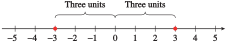

Subsection 6.1 Introduction
The absolute value function is used to model problems involving distance. Recall that the absolute value of a number gives the distance from the origin to that number on the number line.
Distance and Absolute Value.
The distance between two points \(x\) and \(a\) is given by \(\abs{x - a}\text{.}\)
For example, the equation \(\abs{x - 2} = 6\) means "the distance between \(x\) and \(2\) is \(6\) units." The number \(x\) could be to the left or the right of \(2\) on the number line. Thus, the equation has two solutions, \(8\) and \(-4\text{,}\) as shown below.

Example 6.1.1.
Write each statement using absolute value notation. Illustrate the solutions on a number line.
- \(x\) is three units from the origin.
- \(p\) is two units from \(5\text{.}\)
- \(a\) is within four units of \(-2\text{.}\)
First, restate each statement in terms of distance.
-
The distance between \(x\) and the origin is three units, or \(\abs{x} = 3\text{.}\) Thus, \(x\) can be \(3\) or \(-3\text{.}\)
 -
The distance between \(p\) and \(5\) is two units, or \(\abs{p - 5} = 2\text{.}\) If we count two units on either side of \(5\text{,}\) we see that \(p\) can be \(3\) or \(7\text{.}\)

-
The distance between \(a\) and \(-2\) is less than four units, or \(\abs{a - (-2)} \lt 4\text{,}\) or \(\abs{a + 2} \lt 4\text{.}\) Count four units on either side of \(-2\text{,}\) to find \(-6\) and \(2\text{.}\) Then \(a\) is between \(-6\) and \(2\text{,}\) or \(-6 \lt a \lt 2\text{.}\)

Checkpoint 6.1.2.
Write each statement using absolute value notation; then illustrate the solutions on a number line.
\(x\) is five units away from \(-3\text{.}\)
\(x\) is at least six units away from \(4\text{.}\)
-
\(\abs{x+3}=5\)
-
\(\abs{x-4}\ge 6\)